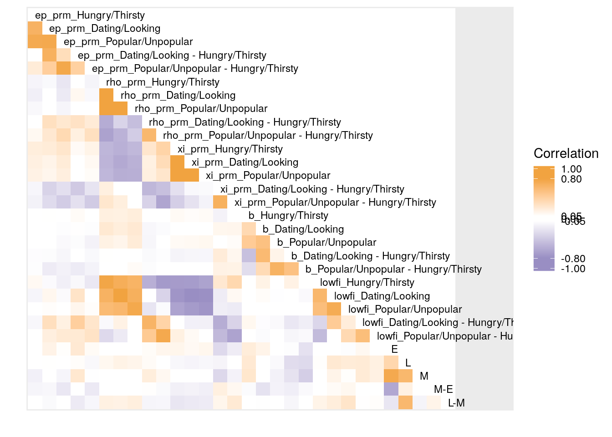

corr-with-ylg.Rmd##
## Attaching package: 'dplyr'## The following objects are masked from 'package:stats':
##
## filter, lag## The following objects are masked from 'package:base':
##
## intersect, setdiff, setequal, union## Loading required package: data.table##
## Attaching package: 'data.table'## The following objects are masked from 'package:dplyr':
##
## between, first, last##
## Attaching package: 'probly'## The following object is masked from 'package:ylglearning':
##
## CachedFitdata(ylgData)
data(splt_rl_betas)
data(splt_lowfi_outcomes)
ylgData$subject_name <- as.numeric(ylgData$subject_name)
ylgData$sample <- ifelse(ylgData$subject_name > 99 & ylgData$subject_name < 300,
'TDS2',
ifelse(ylgData$subject_name > 299 & ylgData$subject_name < 400,
'TDS1',
ifelse(ylgData$subject_name > 399,
'TDS3', NA)))
id_correspondence <- readr::read_csv('/data/jflournoy/split/probly/splt_anon_id.csv')## Parsed with column specification:
## cols(
## id = col_character(),
## sample = col_character(),
## anon_id = col_double(),
## anon_sample = col_character(),
## exclude = col_double(),
## reason = col_character()
## )ylgData$subject_name <- as.character(ylgData$subject_name)
ylgData_deid <- dplyr::left_join(ylgData, id_correspondence,
by = c('subject_name' = 'id',
'sample' = 'sample')) %>%
dplyr::filter(is.na(exclude), !is.na(anon_id)) %>%
dplyr::select(-subject_name, -sample) %>%
dplyr::rename(id = anon_id, sample = anon_sample)ylgData_deid_sum <- ylgData_deid %>%
dplyr::filter(run_index %in% 3:8) %>%
dplyr::group_by(id, type) %>%
dplyr::summarize(pGo = mean(goDec, na.rm = T)) %>%
tidyr::spread(type, pGo) %>%
dplyr::mutate(`M-E` = M - E,
`L-M` = L - M)
parlevels <- unlist(lapply(c('ep_prm', 'rho_prm', 'xi_prm', 'b'), function(x) paste(x, unique(splt_rl_betas$condition), sep = '_')))
lowfiparlevels <- unlist(paste('lowfi', unique(splt_rl_betas$condition), sep = '_'))
splt_rl_betas_w <- splt_rl_betas %>%
dplyr::filter(condition != 'Hungry/Thirsty - Hungry/Thirsty') %>%
tidyr::unite(par, parameter, condition) %>%
dplyr::mutate(par = factor(par, levels = parlevels)) %>%
dplyr::select(median, par, id, sample) %>%
tidyr::spread(par, median)
splt_lowfi_outcomes_w <- splt_lowfi_outcomes %>%
ungroup() %>%
dplyr::filter(outcome == 'bin_5_to_end', condition != 'Hungry/Thirsty - Hungry/Thirsty') %>%
dplyr::select(-outcome) %>%
dplyr::mutate(condition = factor(paste0('lowfi_', condition), levels = lowfiparlevels)) %>%
tidyr::spread(condition, value)
splt_rl_ylg <- dplyr::left_join(
dplyr::left_join(
dplyr::filter(splt_rl_betas_w, grepl('adolescents', sample)),
splt_lowfi_outcomes_w),
ylgData_deid_sum,
by = c('id' = 'id'))## Joining, by = "id"
## Call:psych::corr.test(x = dplyr::select(splt_rl_ylg, -id, -sample),
## method = "spearman")
## Correlation matrix
## ep_prm_Hungry/Thirsty
## ep_prm_Hungry/Thirsty 1.00
## ep_prm_Dating/Looking 0.67
## ep_prm_Popular/Unpopular 0.74
## ep_prm_Dating/Looking - Hungry/Thirsty 0.03
## ep_prm_Popular/Unpopular - Hungry/Thirsty 0.20
## rho_prm_Hungry/Thirsty -0.12
## rho_prm_Dating/Looking -0.15
## rho_prm_Popular/Unpopular -0.09
## rho_prm_Dating/Looking - Hungry/Thirsty 0.02
## rho_prm_Popular/Unpopular - Hungry/Thirsty 0.10
## xi_prm_Hungry/Thirsty 0.19
## xi_prm_Dating/Looking 0.17
## xi_prm_Popular/Unpopular 0.15
## xi_prm_Dating/Looking - Hungry/Thirsty -0.11
## xi_prm_Popular/Unpopular - Hungry/Thirsty -0.13
## b_Hungry/Thirsty 0.04
## b_Dating/Looking 0.00
## b_Popular/Unpopular 0.02
## b_Dating/Looking - Hungry/Thirsty -0.07
## b_Popular/Unpopular - Hungry/Thirsty -0.06
## lowfi_Hungry/Thirsty 0.10
## lowfi_Dating/Looking -0.11
## lowfi_Popular/Unpopular -0.01
## lowfi_Dating/Looking - Hungry/Thirsty -0.10
## lowfi_Popular/Unpopular - Hungry/Thirsty -0.04
## E -0.02
## L -0.04
## M -0.14
## M-E -0.11
## L-M 0.03
## ep_prm_Dating/Looking
## ep_prm_Hungry/Thirsty 0.67
## ep_prm_Dating/Looking 1.00
## ep_prm_Popular/Unpopular 0.75
## ep_prm_Dating/Looking - Hungry/Thirsty 0.68
## ep_prm_Popular/Unpopular - Hungry/Thirsty 0.44
## rho_prm_Hungry/Thirsty -0.09
## rho_prm_Dating/Looking -0.02
## rho_prm_Popular/Unpopular -0.05
## rho_prm_Dating/Looking - Hungry/Thirsty 0.30
## rho_prm_Popular/Unpopular - Hungry/Thirsty 0.23
## xi_prm_Hungry/Thirsty 0.20
## xi_prm_Dating/Looking 0.14
## xi_prm_Popular/Unpopular 0.12
## xi_prm_Dating/Looking - Hungry/Thirsty -0.33
## xi_prm_Popular/Unpopular - Hungry/Thirsty -0.28
## b_Hungry/Thirsty 0.05
## b_Dating/Looking 0.03
## b_Popular/Unpopular -0.05
## b_Dating/Looking - Hungry/Thirsty -0.07
## b_Popular/Unpopular - Hungry/Thirsty -0.18
## lowfi_Hungry/Thirsty -0.08
## lowfi_Dating/Looking 0.11
## lowfi_Popular/Unpopular 0.07
## lowfi_Dating/Looking - Hungry/Thirsty 0.30
## lowfi_Popular/Unpopular - Hungry/Thirsty 0.17
## E 0.14
## L 0.05
## M 0.05
## M-E -0.10
## L-M -0.08
## ep_prm_Popular/Unpopular
## ep_prm_Hungry/Thirsty 0.74
## ep_prm_Dating/Looking 0.75
## ep_prm_Popular/Unpopular 1.00
## ep_prm_Dating/Looking - Hungry/Thirsty 0.31
## ep_prm_Popular/Unpopular - Hungry/Thirsty 0.76
## rho_prm_Hungry/Thirsty -0.21
## rho_prm_Dating/Looking -0.19
## rho_prm_Popular/Unpopular -0.12
## rho_prm_Dating/Looking - Hungry/Thirsty 0.23
## rho_prm_Popular/Unpopular - Hungry/Thirsty 0.35
## xi_prm_Hungry/Thirsty 0.25
## xi_prm_Dating/Looking 0.20
## xi_prm_Popular/Unpopular 0.18
## xi_prm_Dating/Looking - Hungry/Thirsty -0.25
## xi_prm_Popular/Unpopular - Hungry/Thirsty -0.38
## b_Hungry/Thirsty -0.01
## b_Dating/Looking -0.06
## b_Popular/Unpopular -0.09
## b_Dating/Looking - Hungry/Thirsty -0.11
## b_Popular/Unpopular - Hungry/Thirsty -0.14
## lowfi_Hungry/Thirsty -0.15
## lowfi_Dating/Looking -0.08
## lowfi_Popular/Unpopular 0.02
## lowfi_Dating/Looking - Hungry/Thirsty 0.16
## lowfi_Popular/Unpopular - Hungry/Thirsty 0.22
## E 0.06
## L -0.04
## M -0.12
## M-E -0.20
## L-M -0.02
## ep_prm_Dating/Looking - Hungry/Thirsty
## ep_prm_Hungry/Thirsty 0.03
## ep_prm_Dating/Looking 0.68
## ep_prm_Popular/Unpopular 0.31
## ep_prm_Dating/Looking - Hungry/Thirsty 1.00
## ep_prm_Popular/Unpopular - Hungry/Thirsty 0.42
## rho_prm_Hungry/Thirsty 0.01
## rho_prm_Dating/Looking 0.11
## rho_prm_Popular/Unpopular 0.04
## rho_prm_Dating/Looking - Hungry/Thirsty 0.28
## rho_prm_Popular/Unpopular - Hungry/Thirsty 0.17
## xi_prm_Hungry/Thirsty 0.09
## xi_prm_Dating/Looking 0.00
## xi_prm_Popular/Unpopular 0.01
## xi_prm_Dating/Looking - Hungry/Thirsty -0.40
## xi_prm_Popular/Unpopular - Hungry/Thirsty -0.25
## b_Hungry/Thirsty 0.08
## b_Dating/Looking 0.05
## b_Popular/Unpopular -0.07
## b_Dating/Looking - Hungry/Thirsty -0.02
## b_Popular/Unpopular - Hungry/Thirsty -0.18
## lowfi_Hungry/Thirsty -0.09
## lowfi_Dating/Looking 0.26
## lowfi_Popular/Unpopular 0.12
## lowfi_Dating/Looking - Hungry/Thirsty 0.43
## lowfi_Popular/Unpopular - Hungry/Thirsty 0.22
## E 0.22
## L 0.07
## M 0.24
## M-E -0.04
## L-M -0.18
## ep_prm_Popular/Unpopular - Hungry/Thirsty
## ep_prm_Hungry/Thirsty 0.20
## ep_prm_Dating/Looking 0.44
## ep_prm_Popular/Unpopular 0.76
## ep_prm_Dating/Looking - Hungry/Thirsty 0.42
## ep_prm_Popular/Unpopular - Hungry/Thirsty 1.00
## rho_prm_Hungry/Thirsty -0.12
## rho_prm_Dating/Looking -0.09
## rho_prm_Popular/Unpopular -0.05
## rho_prm_Dating/Looking - Hungry/Thirsty 0.21
## rho_prm_Popular/Unpopular - Hungry/Thirsty 0.30
## xi_prm_Hungry/Thirsty 0.14
## xi_prm_Dating/Looking 0.09
## xi_prm_Popular/Unpopular 0.08
## xi_prm_Dating/Looking - Hungry/Thirsty -0.22
## xi_prm_Popular/Unpopular - Hungry/Thirsty -0.39
## b_Hungry/Thirsty -0.01
## b_Dating/Looking -0.07
## b_Popular/Unpopular -0.13
## b_Dating/Looking - Hungry/Thirsty -0.09
## b_Popular/Unpopular - Hungry/Thirsty -0.13
## lowfi_Hungry/Thirsty -0.20
## lowfi_Dating/Looking 0.00
## lowfi_Popular/Unpopular 0.06
## lowfi_Dating/Looking - Hungry/Thirsty 0.25
## lowfi_Popular/Unpopular - Hungry/Thirsty 0.27
## E 0.08
## L -0.10
## M -0.05
## M-E -0.19
## L-M -0.10
## rho_prm_Hungry/Thirsty
## ep_prm_Hungry/Thirsty -0.12
## ep_prm_Dating/Looking -0.09
## ep_prm_Popular/Unpopular -0.21
## ep_prm_Dating/Looking - Hungry/Thirsty 0.01
## ep_prm_Popular/Unpopular - Hungry/Thirsty -0.12
## rho_prm_Hungry/Thirsty 1.00
## rho_prm_Dating/Looking 0.94
## rho_prm_Popular/Unpopular 0.93
## rho_prm_Dating/Looking - Hungry/Thirsty -0.59
## rho_prm_Popular/Unpopular - Hungry/Thirsty -0.66
## xi_prm_Hungry/Thirsty -0.52
## xi_prm_Dating/Looking -0.54
## xi_prm_Popular/Unpopular -0.52
## xi_prm_Dating/Looking - Hungry/Thirsty 0.17
## xi_prm_Popular/Unpopular - Hungry/Thirsty 0.24
## b_Hungry/Thirsty 0.17
## b_Dating/Looking 0.22
## b_Popular/Unpopular 0.16
## b_Dating/Looking - Hungry/Thirsty 0.05
## b_Popular/Unpopular - Hungry/Thirsty 0.05
## lowfi_Hungry/Thirsty 0.77
## lowfi_Dating/Looking 0.67
## lowfi_Popular/Unpopular 0.60
## lowfi_Dating/Looking - Hungry/Thirsty -0.09
## lowfi_Popular/Unpopular - Hungry/Thirsty -0.29
## E 0.01
## L 0.11
## M -0.01
## M-E -0.02
## L-M 0.16
## rho_prm_Dating/Looking
## ep_prm_Hungry/Thirsty -0.15
## ep_prm_Dating/Looking -0.02
## ep_prm_Popular/Unpopular -0.19
## ep_prm_Dating/Looking - Hungry/Thirsty 0.11
## ep_prm_Popular/Unpopular - Hungry/Thirsty -0.09
## rho_prm_Hungry/Thirsty 0.94
## rho_prm_Dating/Looking 1.00
## rho_prm_Popular/Unpopular 0.91
## rho_prm_Dating/Looking - Hungry/Thirsty -0.33
## rho_prm_Popular/Unpopular - Hungry/Thirsty -0.55
## xi_prm_Hungry/Thirsty -0.56
## xi_prm_Dating/Looking -0.61
## xi_prm_Popular/Unpopular -0.58
## xi_prm_Dating/Looking - Hungry/Thirsty 0.02
## xi_prm_Popular/Unpopular - Hungry/Thirsty 0.18
## b_Hungry/Thirsty 0.16
## b_Dating/Looking 0.19
## b_Popular/Unpopular 0.13
## b_Dating/Looking - Hungry/Thirsty 0.02
## b_Popular/Unpopular - Hungry/Thirsty 0.03
## lowfi_Hungry/Thirsty 0.71
## lowfi_Dating/Looking 0.81
## lowfi_Popular/Unpopular 0.63
## lowfi_Dating/Looking - Hungry/Thirsty 0.15
## lowfi_Popular/Unpopular - Hungry/Thirsty -0.18
## E 0.00
## L 0.15
## M 0.05
## M-E 0.04
## L-M 0.15
## rho_prm_Popular/Unpopular
## ep_prm_Hungry/Thirsty -0.09
## ep_prm_Dating/Looking -0.05
## ep_prm_Popular/Unpopular -0.12
## ep_prm_Dating/Looking - Hungry/Thirsty 0.04
## ep_prm_Popular/Unpopular - Hungry/Thirsty -0.05
## rho_prm_Hungry/Thirsty 0.93
## rho_prm_Dating/Looking 0.91
## rho_prm_Popular/Unpopular 1.00
## rho_prm_Dating/Looking - Hungry/Thirsty -0.47
## rho_prm_Popular/Unpopular - Hungry/Thirsty -0.38
## xi_prm_Hungry/Thirsty -0.51
## xi_prm_Dating/Looking -0.56
## xi_prm_Popular/Unpopular -0.57
## xi_prm_Dating/Looking - Hungry/Thirsty 0.02
## xi_prm_Popular/Unpopular - Hungry/Thirsty 0.00
## b_Hungry/Thirsty 0.19
## b_Dating/Looking 0.22
## b_Popular/Unpopular 0.20
## b_Dating/Looking - Hungry/Thirsty 0.05
## b_Popular/Unpopular - Hungry/Thirsty 0.08
## lowfi_Hungry/Thirsty 0.66
## lowfi_Dating/Looking 0.69
## lowfi_Popular/Unpopular 0.75
## lowfi_Dating/Looking - Hungry/Thirsty 0.05
## lowfi_Popular/Unpopular - Hungry/Thirsty -0.01
## E 0.01
## L 0.13
## M 0.01
## M-E -0.02
## L-M 0.18
## rho_prm_Dating/Looking - Hungry/Thirsty
## ep_prm_Hungry/Thirsty 0.02
## ep_prm_Dating/Looking 0.30
## ep_prm_Popular/Unpopular 0.23
## ep_prm_Dating/Looking - Hungry/Thirsty 0.28
## ep_prm_Popular/Unpopular - Hungry/Thirsty 0.21
## rho_prm_Hungry/Thirsty -0.59
## rho_prm_Dating/Looking -0.33
## rho_prm_Popular/Unpopular -0.47
## rho_prm_Dating/Looking - Hungry/Thirsty 1.00
## rho_prm_Popular/Unpopular - Hungry/Thirsty 0.62
## xi_prm_Hungry/Thirsty 0.25
## xi_prm_Dating/Looking 0.16
## xi_prm_Popular/Unpopular 0.17
## xi_prm_Dating/Looking - Hungry/Thirsty -0.52
## xi_prm_Popular/Unpopular - Hungry/Thirsty -0.34
## b_Hungry/Thirsty -0.04
## b_Dating/Looking -0.10
## b_Popular/Unpopular -0.11
## b_Dating/Looking - Hungry/Thirsty -0.08
## b_Popular/Unpopular - Hungry/Thirsty -0.07
## lowfi_Hungry/Thirsty -0.57
## lowfi_Dating/Looking -0.04
## lowfi_Popular/Unpopular -0.21
## lowfi_Dating/Looking - Hungry/Thirsty 0.66
## lowfi_Popular/Unpopular - Hungry/Thirsty 0.48
## E 0.08
## L 0.08
## M 0.19
## M-E 0.06
## L-M -0.11
## rho_prm_Popular/Unpopular - Hungry/Thirsty
## ep_prm_Hungry/Thirsty 0.10
## ep_prm_Dating/Looking 0.23
## ep_prm_Popular/Unpopular 0.35
## ep_prm_Dating/Looking - Hungry/Thirsty 0.17
## ep_prm_Popular/Unpopular - Hungry/Thirsty 0.30
## rho_prm_Hungry/Thirsty -0.66
## rho_prm_Dating/Looking -0.55
## rho_prm_Popular/Unpopular -0.38
## rho_prm_Dating/Looking - Hungry/Thirsty 0.62
## rho_prm_Popular/Unpopular - Hungry/Thirsty 1.00
## xi_prm_Hungry/Thirsty 0.40
## xi_prm_Dating/Looking 0.33
## xi_prm_Popular/Unpopular 0.25
## xi_prm_Dating/Looking - Hungry/Thirsty -0.46
## xi_prm_Popular/Unpopular - Hungry/Thirsty -0.64
## b_Hungry/Thirsty -0.01
## b_Dating/Looking -0.08
## b_Popular/Unpopular -0.02
## b_Dating/Looking - Hungry/Thirsty -0.06
## b_Popular/Unpopular - Hungry/Thirsty -0.04
## lowfi_Hungry/Thirsty -0.72
## lowfi_Dating/Looking -0.33
## lowfi_Popular/Unpopular -0.08
## lowfi_Dating/Looking - Hungry/Thirsty 0.40
## lowfi_Popular/Unpopular - Hungry/Thirsty 0.75
## E 0.12
## L 0.02
## M 0.10
## M-E -0.08
## L-M -0.11
## xi_prm_Hungry/Thirsty
## ep_prm_Hungry/Thirsty 0.19
## ep_prm_Dating/Looking 0.20
## ep_prm_Popular/Unpopular 0.25
## ep_prm_Dating/Looking - Hungry/Thirsty 0.09
## ep_prm_Popular/Unpopular - Hungry/Thirsty 0.14
## rho_prm_Hungry/Thirsty -0.52
## rho_prm_Dating/Looking -0.56
## rho_prm_Popular/Unpopular -0.51
## rho_prm_Dating/Looking - Hungry/Thirsty 0.25
## rho_prm_Popular/Unpopular - Hungry/Thirsty 0.40
## xi_prm_Hungry/Thirsty 1.00
## xi_prm_Dating/Looking 0.98
## xi_prm_Popular/Unpopular 0.96
## xi_prm_Dating/Looking - Hungry/Thirsty -0.25
## xi_prm_Popular/Unpopular - Hungry/Thirsty -0.37
## b_Hungry/Thirsty 0.09
## b_Dating/Looking -0.05
## b_Popular/Unpopular 0.09
## b_Dating/Looking - Hungry/Thirsty -0.12
## b_Popular/Unpopular - Hungry/Thirsty -0.02
## lowfi_Hungry/Thirsty -0.71
## lowfi_Dating/Looking -0.75
## lowfi_Popular/Unpopular -0.65
## lowfi_Dating/Looking - Hungry/Thirsty -0.03
## lowfi_Popular/Unpopular - Hungry/Thirsty 0.16
## E 0.12
## L -0.10
## M 0.00
## M-E -0.15
## L-M -0.21
## xi_prm_Dating/Looking
## ep_prm_Hungry/Thirsty 0.17
## ep_prm_Dating/Looking 0.14
## ep_prm_Popular/Unpopular 0.20
## ep_prm_Dating/Looking - Hungry/Thirsty 0.00
## ep_prm_Popular/Unpopular - Hungry/Thirsty 0.09
## rho_prm_Hungry/Thirsty -0.54
## rho_prm_Dating/Looking -0.61
## rho_prm_Popular/Unpopular -0.56
## rho_prm_Dating/Looking - Hungry/Thirsty 0.16
## rho_prm_Popular/Unpopular - Hungry/Thirsty 0.33
## xi_prm_Hungry/Thirsty 0.98
## xi_prm_Dating/Looking 1.00
## xi_prm_Popular/Unpopular 0.98
## xi_prm_Dating/Looking - Hungry/Thirsty -0.09
## xi_prm_Popular/Unpopular - Hungry/Thirsty -0.23
## b_Hungry/Thirsty 0.07
## b_Dating/Looking -0.05
## b_Popular/Unpopular 0.10
## b_Dating/Looking - Hungry/Thirsty -0.11
## b_Popular/Unpopular - Hungry/Thirsty 0.00
## lowfi_Hungry/Thirsty -0.70
## lowfi_Dating/Looking -0.81
## lowfi_Popular/Unpopular -0.71
## lowfi_Dating/Looking - Hungry/Thirsty -0.14
## lowfi_Popular/Unpopular - Hungry/Thirsty 0.09
## E 0.09
## L -0.12
## M -0.03
## M-E -0.13
## L-M -0.19
## xi_prm_Popular/Unpopular
## ep_prm_Hungry/Thirsty 0.15
## ep_prm_Dating/Looking 0.12
## ep_prm_Popular/Unpopular 0.18
## ep_prm_Dating/Looking - Hungry/Thirsty 0.01
## ep_prm_Popular/Unpopular - Hungry/Thirsty 0.08
## rho_prm_Hungry/Thirsty -0.52
## rho_prm_Dating/Looking -0.58
## rho_prm_Popular/Unpopular -0.57
## rho_prm_Dating/Looking - Hungry/Thirsty 0.17
## rho_prm_Popular/Unpopular - Hungry/Thirsty 0.25
## xi_prm_Hungry/Thirsty 0.96
## xi_prm_Dating/Looking 0.98
## xi_prm_Popular/Unpopular 1.00
## xi_prm_Dating/Looking - Hungry/Thirsty -0.08
## xi_prm_Popular/Unpopular - Hungry/Thirsty -0.13
## b_Hungry/Thirsty 0.08
## b_Dating/Looking -0.03
## b_Popular/Unpopular 0.11
## b_Dating/Looking - Hungry/Thirsty -0.11
## b_Popular/Unpopular - Hungry/Thirsty 0.02
## lowfi_Hungry/Thirsty -0.66
## lowfi_Dating/Looking -0.78
## lowfi_Popular/Unpopular -0.75
## lowfi_Dating/Looking - Hungry/Thirsty -0.15
## lowfi_Popular/Unpopular - Hungry/Thirsty 0.00
## E 0.11
## L -0.10
## M -0.02
## M-E -0.15
## L-M -0.18
## xi_prm_Dating/Looking - Hungry/Thirsty
## ep_prm_Hungry/Thirsty -0.11
## ep_prm_Dating/Looking -0.33
## ep_prm_Popular/Unpopular -0.25
## ep_prm_Dating/Looking - Hungry/Thirsty -0.40
## ep_prm_Popular/Unpopular - Hungry/Thirsty -0.22
## rho_prm_Hungry/Thirsty 0.17
## rho_prm_Dating/Looking 0.02
## rho_prm_Popular/Unpopular 0.02
## rho_prm_Dating/Looking - Hungry/Thirsty -0.52
## rho_prm_Popular/Unpopular - Hungry/Thirsty -0.46
## xi_prm_Hungry/Thirsty -0.25
## xi_prm_Dating/Looking -0.09
## xi_prm_Popular/Unpopular -0.08
## xi_prm_Dating/Looking - Hungry/Thirsty 1.00
## xi_prm_Popular/Unpopular - Hungry/Thirsty 0.69
## b_Hungry/Thirsty -0.13
## b_Dating/Looking 0.12
## b_Popular/Unpopular 0.01
## b_Dating/Looking - Hungry/Thirsty 0.20
## b_Popular/Unpopular - Hungry/Thirsty 0.15
## lowfi_Hungry/Thirsty 0.23
## lowfi_Dating/Looking -0.17
## lowfi_Popular/Unpopular -0.16
## lowfi_Dating/Looking - Hungry/Thirsty -0.59
## lowfi_Popular/Unpopular - Hungry/Thirsty -0.51
## E -0.29
## L -0.12
## M -0.30
## M-E 0.17
## L-M 0.12
## xi_prm_Popular/Unpopular - Hungry/Thirsty
## ep_prm_Hungry/Thirsty -0.13
## ep_prm_Dating/Looking -0.28
## ep_prm_Popular/Unpopular -0.38
## ep_prm_Dating/Looking - Hungry/Thirsty -0.25
## ep_prm_Popular/Unpopular - Hungry/Thirsty -0.39
## rho_prm_Hungry/Thirsty 0.24
## rho_prm_Dating/Looking 0.18
## rho_prm_Popular/Unpopular 0.00
## rho_prm_Dating/Looking - Hungry/Thirsty -0.34
## rho_prm_Popular/Unpopular - Hungry/Thirsty -0.64
## xi_prm_Hungry/Thirsty -0.37
## xi_prm_Dating/Looking -0.23
## xi_prm_Popular/Unpopular -0.13
## xi_prm_Dating/Looking - Hungry/Thirsty 0.69
## xi_prm_Popular/Unpopular - Hungry/Thirsty 1.00
## b_Hungry/Thirsty -0.02
## b_Dating/Looking 0.12
## b_Popular/Unpopular 0.07
## b_Dating/Looking - Hungry/Thirsty 0.11
## b_Popular/Unpopular - Hungry/Thirsty 0.15
## lowfi_Hungry/Thirsty 0.36
## lowfi_Dating/Looking 0.10
## lowfi_Popular/Unpopular -0.18
## lowfi_Dating/Looking - Hungry/Thirsty -0.33
## lowfi_Popular/Unpopular - Hungry/Thirsty -0.65
## E -0.17
## L 0.04
## M -0.13
## M-E 0.10
## L-M 0.22
## b_Hungry/Thirsty b_Dating/Looking
## ep_prm_Hungry/Thirsty 0.04 0.00
## ep_prm_Dating/Looking 0.05 0.03
## ep_prm_Popular/Unpopular -0.01 -0.06
## ep_prm_Dating/Looking - Hungry/Thirsty 0.08 0.05
## ep_prm_Popular/Unpopular - Hungry/Thirsty -0.01 -0.07
## rho_prm_Hungry/Thirsty 0.17 0.22
## rho_prm_Dating/Looking 0.16 0.19
## rho_prm_Popular/Unpopular 0.19 0.22
## rho_prm_Dating/Looking - Hungry/Thirsty -0.04 -0.10
## rho_prm_Popular/Unpopular - Hungry/Thirsty -0.01 -0.08
## xi_prm_Hungry/Thirsty 0.09 -0.05
## xi_prm_Dating/Looking 0.07 -0.05
## xi_prm_Popular/Unpopular 0.08 -0.03
## xi_prm_Dating/Looking - Hungry/Thirsty -0.13 0.12
## xi_prm_Popular/Unpopular - Hungry/Thirsty -0.02 0.12
## b_Hungry/Thirsty 1.00 0.35
## b_Dating/Looking 0.35 1.00
## b_Popular/Unpopular 0.46 0.55
## b_Dating/Looking - Hungry/Thirsty -0.46 0.61
## b_Popular/Unpopular - Hungry/Thirsty -0.27 0.34
## lowfi_Hungry/Thirsty -0.02 0.15
## lowfi_Dating/Looking 0.05 0.07
## lowfi_Popular/Unpopular 0.00 0.05
## lowfi_Dating/Looking - Hungry/Thirsty 0.11 -0.07
## lowfi_Popular/Unpopular - Hungry/Thirsty 0.01 -0.08
## E 0.19 0.14
## L 0.22 -0.05
## M 0.24 -0.01
## M-E -0.08 -0.24
## L-M 0.03 -0.06
## b_Popular/Unpopular
## ep_prm_Hungry/Thirsty 0.02
## ep_prm_Dating/Looking -0.05
## ep_prm_Popular/Unpopular -0.09
## ep_prm_Dating/Looking - Hungry/Thirsty -0.07
## ep_prm_Popular/Unpopular - Hungry/Thirsty -0.13
## rho_prm_Hungry/Thirsty 0.16
## rho_prm_Dating/Looking 0.13
## rho_prm_Popular/Unpopular 0.20
## rho_prm_Dating/Looking - Hungry/Thirsty -0.11
## rho_prm_Popular/Unpopular - Hungry/Thirsty -0.02
## xi_prm_Hungry/Thirsty 0.09
## xi_prm_Dating/Looking 0.10
## xi_prm_Popular/Unpopular 0.11
## xi_prm_Dating/Looking - Hungry/Thirsty 0.01
## xi_prm_Popular/Unpopular - Hungry/Thirsty 0.07
## b_Hungry/Thirsty 0.46
## b_Dating/Looking 0.55
## b_Popular/Unpopular 1.00
## b_Dating/Looking - Hungry/Thirsty 0.14
## b_Popular/Unpopular - Hungry/Thirsty 0.67
## lowfi_Hungry/Thirsty 0.04
## lowfi_Dating/Looking -0.05
## lowfi_Popular/Unpopular 0.01
## lowfi_Dating/Looking - Hungry/Thirsty -0.09
## lowfi_Popular/Unpopular - Hungry/Thirsty -0.05
## E -0.05
## L -0.09
## M -0.14
## M-E -0.13
## L-M 0.04
## b_Dating/Looking - Hungry/Thirsty
## ep_prm_Hungry/Thirsty -0.07
## ep_prm_Dating/Looking -0.07
## ep_prm_Popular/Unpopular -0.11
## ep_prm_Dating/Looking - Hungry/Thirsty -0.02
## ep_prm_Popular/Unpopular - Hungry/Thirsty -0.09
## rho_prm_Hungry/Thirsty 0.05
## rho_prm_Dating/Looking 0.02
## rho_prm_Popular/Unpopular 0.05
## rho_prm_Dating/Looking - Hungry/Thirsty -0.08
## rho_prm_Popular/Unpopular - Hungry/Thirsty -0.06
## xi_prm_Hungry/Thirsty -0.12
## xi_prm_Dating/Looking -0.11
## xi_prm_Popular/Unpopular -0.11
## xi_prm_Dating/Looking - Hungry/Thirsty 0.20
## xi_prm_Popular/Unpopular - Hungry/Thirsty 0.11
## b_Hungry/Thirsty -0.46
## b_Dating/Looking 0.61
## b_Popular/Unpopular 0.14
## b_Dating/Looking - Hungry/Thirsty 1.00
## b_Popular/Unpopular - Hungry/Thirsty 0.55
## lowfi_Hungry/Thirsty 0.15
## lowfi_Dating/Looking 0.00
## lowfi_Popular/Unpopular 0.04
## lowfi_Dating/Looking - Hungry/Thirsty -0.21
## lowfi_Popular/Unpopular - Hungry/Thirsty -0.11
## E -0.06
## L -0.27
## M -0.23
## M-E -0.16
## L-M -0.11
## b_Popular/Unpopular - Hungry/Thirsty
## ep_prm_Hungry/Thirsty -0.06
## ep_prm_Dating/Looking -0.18
## ep_prm_Popular/Unpopular -0.14
## ep_prm_Dating/Looking - Hungry/Thirsty -0.18
## ep_prm_Popular/Unpopular - Hungry/Thirsty -0.13
## rho_prm_Hungry/Thirsty 0.05
## rho_prm_Dating/Looking 0.03
## rho_prm_Popular/Unpopular 0.08
## rho_prm_Dating/Looking - Hungry/Thirsty -0.07
## rho_prm_Popular/Unpopular - Hungry/Thirsty -0.04
## xi_prm_Hungry/Thirsty -0.02
## xi_prm_Dating/Looking 0.00
## xi_prm_Popular/Unpopular 0.02
## xi_prm_Dating/Looking - Hungry/Thirsty 0.15
## xi_prm_Popular/Unpopular - Hungry/Thirsty 0.15
## b_Hungry/Thirsty -0.27
## b_Dating/Looking 0.34
## b_Popular/Unpopular 0.67
## b_Dating/Looking - Hungry/Thirsty 0.55
## b_Popular/Unpopular - Hungry/Thirsty 1.00
## lowfi_Hungry/Thirsty 0.05
## lowfi_Dating/Looking -0.09
## lowfi_Popular/Unpopular -0.02
## lowfi_Dating/Looking - Hungry/Thirsty -0.16
## lowfi_Popular/Unpopular - Hungry/Thirsty -0.09
## E -0.24
## L -0.29
## M -0.37
## M-E -0.09
## L-M 0.03
## lowfi_Hungry/Thirsty
## ep_prm_Hungry/Thirsty 0.10
## ep_prm_Dating/Looking -0.08
## ep_prm_Popular/Unpopular -0.15
## ep_prm_Dating/Looking - Hungry/Thirsty -0.09
## ep_prm_Popular/Unpopular - Hungry/Thirsty -0.20
## rho_prm_Hungry/Thirsty 0.77
## rho_prm_Dating/Looking 0.71
## rho_prm_Popular/Unpopular 0.66
## rho_prm_Dating/Looking - Hungry/Thirsty -0.57
## rho_prm_Popular/Unpopular - Hungry/Thirsty -0.72
## xi_prm_Hungry/Thirsty -0.71
## xi_prm_Dating/Looking -0.70
## xi_prm_Popular/Unpopular -0.66
## xi_prm_Dating/Looking - Hungry/Thirsty 0.23
## xi_prm_Popular/Unpopular - Hungry/Thirsty 0.36
## b_Hungry/Thirsty -0.02
## b_Dating/Looking 0.15
## b_Popular/Unpopular 0.04
## b_Dating/Looking - Hungry/Thirsty 0.15
## b_Popular/Unpopular - Hungry/Thirsty 0.05
## lowfi_Hungry/Thirsty 1.00
## lowfi_Dating/Looking 0.63
## lowfi_Popular/Unpopular 0.57
## lowfi_Dating/Looking - Hungry/Thirsty -0.31
## lowfi_Popular/Unpopular - Hungry/Thirsty -0.49
## E -0.03
## L 0.06
## M -0.03
## M-E 0.01
## L-M 0.14
## lowfi_Dating/Looking
## ep_prm_Hungry/Thirsty -0.11
## ep_prm_Dating/Looking 0.11
## ep_prm_Popular/Unpopular -0.08
## ep_prm_Dating/Looking - Hungry/Thirsty 0.26
## ep_prm_Popular/Unpopular - Hungry/Thirsty 0.00
## rho_prm_Hungry/Thirsty 0.67
## rho_prm_Dating/Looking 0.81
## rho_prm_Popular/Unpopular 0.69
## rho_prm_Dating/Looking - Hungry/Thirsty -0.04
## rho_prm_Popular/Unpopular - Hungry/Thirsty -0.33
## xi_prm_Hungry/Thirsty -0.75
## xi_prm_Dating/Looking -0.81
## xi_prm_Popular/Unpopular -0.78
## xi_prm_Dating/Looking - Hungry/Thirsty -0.17
## xi_prm_Popular/Unpopular - Hungry/Thirsty 0.10
## b_Hungry/Thirsty 0.05
## b_Dating/Looking 0.07
## b_Popular/Unpopular -0.05
## b_Dating/Looking - Hungry/Thirsty 0.00
## b_Popular/Unpopular - Hungry/Thirsty -0.09
## lowfi_Hungry/Thirsty 0.63
## lowfi_Dating/Looking 1.00
## lowfi_Popular/Unpopular 0.72
## lowfi_Dating/Looking - Hungry/Thirsty 0.47
## lowfi_Popular/Unpopular - Hungry/Thirsty 0.01
## E 0.03
## L 0.22
## M 0.14
## M-E 0.08
## L-M 0.19
## lowfi_Popular/Unpopular
## ep_prm_Hungry/Thirsty -0.01
## ep_prm_Dating/Looking 0.07
## ep_prm_Popular/Unpopular 0.02
## ep_prm_Dating/Looking - Hungry/Thirsty 0.12
## ep_prm_Popular/Unpopular - Hungry/Thirsty 0.06
## rho_prm_Hungry/Thirsty 0.60
## rho_prm_Dating/Looking 0.63
## rho_prm_Popular/Unpopular 0.75
## rho_prm_Dating/Looking - Hungry/Thirsty -0.21
## rho_prm_Popular/Unpopular - Hungry/Thirsty -0.08
## xi_prm_Hungry/Thirsty -0.65
## xi_prm_Dating/Looking -0.71
## xi_prm_Popular/Unpopular -0.75
## xi_prm_Dating/Looking - Hungry/Thirsty -0.16
## xi_prm_Popular/Unpopular - Hungry/Thirsty -0.18
## b_Hungry/Thirsty 0.00
## b_Dating/Looking 0.05
## b_Popular/Unpopular 0.01
## b_Dating/Looking - Hungry/Thirsty 0.04
## b_Popular/Unpopular - Hungry/Thirsty -0.02
## lowfi_Hungry/Thirsty 0.57
## lowfi_Dating/Looking 0.72
## lowfi_Popular/Unpopular 1.00
## lowfi_Dating/Looking - Hungry/Thirsty 0.19
## lowfi_Popular/Unpopular - Hungry/Thirsty 0.35
## E -0.06
## L 0.20
## M 0.06
## M-E 0.11
## L-M 0.26
## lowfi_Dating/Looking - Hungry/Thirsty
## ep_prm_Hungry/Thirsty -0.10
## ep_prm_Dating/Looking 0.30
## ep_prm_Popular/Unpopular 0.16
## ep_prm_Dating/Looking - Hungry/Thirsty 0.43
## ep_prm_Popular/Unpopular - Hungry/Thirsty 0.25
## rho_prm_Hungry/Thirsty -0.09
## rho_prm_Dating/Looking 0.15
## rho_prm_Popular/Unpopular 0.05
## rho_prm_Dating/Looking - Hungry/Thirsty 0.66
## rho_prm_Popular/Unpopular - Hungry/Thirsty 0.40
## xi_prm_Hungry/Thirsty -0.03
## xi_prm_Dating/Looking -0.14
## xi_prm_Popular/Unpopular -0.15
## xi_prm_Dating/Looking - Hungry/Thirsty -0.59
## xi_prm_Popular/Unpopular - Hungry/Thirsty -0.33
## b_Hungry/Thirsty 0.11
## b_Dating/Looking -0.07
## b_Popular/Unpopular -0.09
## b_Dating/Looking - Hungry/Thirsty -0.21
## b_Popular/Unpopular - Hungry/Thirsty -0.16
## lowfi_Hungry/Thirsty -0.31
## lowfi_Dating/Looking 0.47
## lowfi_Popular/Unpopular 0.19
## lowfi_Dating/Looking - Hungry/Thirsty 1.00
## lowfi_Popular/Unpopular - Hungry/Thirsty 0.58
## E 0.11
## L 0.21
## M 0.21
## M-E 0.03
## L-M 0.05
## lowfi_Popular/Unpopular - Hungry/Thirsty
## ep_prm_Hungry/Thirsty -0.04
## ep_prm_Dating/Looking 0.17
## ep_prm_Popular/Unpopular 0.22
## ep_prm_Dating/Looking - Hungry/Thirsty 0.22
## ep_prm_Popular/Unpopular - Hungry/Thirsty 0.27
## rho_prm_Hungry/Thirsty -0.29
## rho_prm_Dating/Looking -0.18
## rho_prm_Popular/Unpopular -0.01
## rho_prm_Dating/Looking - Hungry/Thirsty 0.48
## rho_prm_Popular/Unpopular - Hungry/Thirsty 0.75
## xi_prm_Hungry/Thirsty 0.16
## xi_prm_Dating/Looking 0.09
## xi_prm_Popular/Unpopular 0.00
## xi_prm_Dating/Looking - Hungry/Thirsty -0.51
## xi_prm_Popular/Unpopular - Hungry/Thirsty -0.65
## b_Hungry/Thirsty 0.01
## b_Dating/Looking -0.08
## b_Popular/Unpopular -0.05
## b_Dating/Looking - Hungry/Thirsty -0.11
## b_Popular/Unpopular - Hungry/Thirsty -0.09
## lowfi_Hungry/Thirsty -0.49
## lowfi_Dating/Looking 0.01
## lowfi_Popular/Unpopular 0.35
## lowfi_Dating/Looking - Hungry/Thirsty 0.58
## lowfi_Popular/Unpopular - Hungry/Thirsty 1.00
## E 0.05
## L 0.16
## M 0.16
## M-E 0.05
## L-M 0.07
## E L M M-E L-M
## ep_prm_Hungry/Thirsty -0.02 -0.04 -0.14 -0.11 0.03
## ep_prm_Dating/Looking 0.14 0.05 0.05 -0.10 -0.08
## ep_prm_Popular/Unpopular 0.06 -0.04 -0.12 -0.20 -0.02
## ep_prm_Dating/Looking - Hungry/Thirsty 0.22 0.07 0.24 -0.04 -0.18
## ep_prm_Popular/Unpopular - Hungry/Thirsty 0.08 -0.10 -0.05 -0.19 -0.10
## rho_prm_Hungry/Thirsty 0.01 0.11 -0.01 -0.02 0.16
## rho_prm_Dating/Looking 0.00 0.15 0.05 0.04 0.15
## rho_prm_Popular/Unpopular 0.01 0.13 0.01 -0.02 0.18
## rho_prm_Dating/Looking - Hungry/Thirsty 0.08 0.08 0.19 0.06 -0.11
## rho_prm_Popular/Unpopular - Hungry/Thirsty 0.12 0.02 0.10 -0.08 -0.11
## xi_prm_Hungry/Thirsty 0.12 -0.10 0.00 -0.15 -0.21
## xi_prm_Dating/Looking 0.09 -0.12 -0.03 -0.13 -0.19
## xi_prm_Popular/Unpopular 0.11 -0.10 -0.02 -0.15 -0.18
## xi_prm_Dating/Looking - Hungry/Thirsty -0.29 -0.12 -0.30 0.17 0.12
## xi_prm_Popular/Unpopular - Hungry/Thirsty -0.17 0.04 -0.13 0.10 0.22
## b_Hungry/Thirsty 0.19 0.22 0.24 -0.08 0.03
## b_Dating/Looking 0.14 -0.05 -0.01 -0.24 -0.06
## b_Popular/Unpopular -0.05 -0.09 -0.14 -0.13 0.04
## b_Dating/Looking - Hungry/Thirsty -0.06 -0.27 -0.23 -0.16 -0.11
## b_Popular/Unpopular - Hungry/Thirsty -0.24 -0.29 -0.37 -0.09 0.03
## lowfi_Hungry/Thirsty -0.03 0.06 -0.03 0.01 0.14
## lowfi_Dating/Looking 0.03 0.22 0.14 0.08 0.19
## lowfi_Popular/Unpopular -0.06 0.20 0.06 0.11 0.26
## lowfi_Dating/Looking - Hungry/Thirsty 0.11 0.21 0.21 0.03 0.05
## lowfi_Popular/Unpopular - Hungry/Thirsty 0.05 0.16 0.16 0.05 0.07
## E 1.00 0.37 0.75 -0.62 -0.21
## L 0.37 1.00 0.63 0.16 0.63
## M 0.75 0.63 1.00 -0.02 -0.12
## M-E -0.62 0.16 -0.02 1.00 0.13
## L-M -0.21 0.63 -0.12 0.13 1.00
## Sample Size
## [1] 87
## Probability values (Entries above the diagonal are adjusted for multiple tests.)
## ep_prm_Hungry/Thirsty
## ep_prm_Hungry/Thirsty 0.00
## ep_prm_Dating/Looking 0.00
## ep_prm_Popular/Unpopular 0.00
## ep_prm_Dating/Looking - Hungry/Thirsty 0.80
## ep_prm_Popular/Unpopular - Hungry/Thirsty 0.06
## rho_prm_Hungry/Thirsty 0.28
## rho_prm_Dating/Looking 0.16
## rho_prm_Popular/Unpopular 0.38
## rho_prm_Dating/Looking - Hungry/Thirsty 0.82
## rho_prm_Popular/Unpopular - Hungry/Thirsty 0.35
## xi_prm_Hungry/Thirsty 0.08
## xi_prm_Dating/Looking 0.12
## xi_prm_Popular/Unpopular 0.16
## xi_prm_Dating/Looking - Hungry/Thirsty 0.33
## xi_prm_Popular/Unpopular - Hungry/Thirsty 0.22
## b_Hungry/Thirsty 0.74
## b_Dating/Looking 0.96
## b_Popular/Unpopular 0.85
## b_Dating/Looking - Hungry/Thirsty 0.54
## b_Popular/Unpopular - Hungry/Thirsty 0.56
## lowfi_Hungry/Thirsty 0.37
## lowfi_Dating/Looking 0.29
## lowfi_Popular/Unpopular 0.90
## lowfi_Dating/Looking - Hungry/Thirsty 0.36
## lowfi_Popular/Unpopular - Hungry/Thirsty 0.70
## E 0.87
## L 0.73
## M 0.18
## M-E 0.29
## L-M 0.81
## ep_prm_Dating/Looking
## ep_prm_Hungry/Thirsty 0.00
## ep_prm_Dating/Looking 0.00
## ep_prm_Popular/Unpopular 0.00
## ep_prm_Dating/Looking - Hungry/Thirsty 0.00
## ep_prm_Popular/Unpopular - Hungry/Thirsty 0.00
## rho_prm_Hungry/Thirsty 0.41
## rho_prm_Dating/Looking 0.85
## rho_prm_Popular/Unpopular 0.63
## rho_prm_Dating/Looking - Hungry/Thirsty 0.01
## rho_prm_Popular/Unpopular - Hungry/Thirsty 0.03
## xi_prm_Hungry/Thirsty 0.06
## xi_prm_Dating/Looking 0.21
## xi_prm_Popular/Unpopular 0.27
## xi_prm_Dating/Looking - Hungry/Thirsty 0.00
## xi_prm_Popular/Unpopular - Hungry/Thirsty 0.01
## b_Hungry/Thirsty 0.63
## b_Dating/Looking 0.76
## b_Popular/Unpopular 0.66
## b_Dating/Looking - Hungry/Thirsty 0.51
## b_Popular/Unpopular - Hungry/Thirsty 0.10
## lowfi_Hungry/Thirsty 0.47
## lowfi_Dating/Looking 0.31
## lowfi_Popular/Unpopular 0.54
## lowfi_Dating/Looking - Hungry/Thirsty 0.00
## lowfi_Popular/Unpopular - Hungry/Thirsty 0.11
## E 0.19
## L 0.63
## M 0.63
## M-E 0.34
## L-M 0.44
## ep_prm_Popular/Unpopular
## ep_prm_Hungry/Thirsty 0.00
## ep_prm_Dating/Looking 0.00
## ep_prm_Popular/Unpopular 0.00
## ep_prm_Dating/Looking - Hungry/Thirsty 0.00
## ep_prm_Popular/Unpopular - Hungry/Thirsty 0.00
## rho_prm_Hungry/Thirsty 0.05
## rho_prm_Dating/Looking 0.08
## rho_prm_Popular/Unpopular 0.29
## rho_prm_Dating/Looking - Hungry/Thirsty 0.03
## rho_prm_Popular/Unpopular - Hungry/Thirsty 0.00
## xi_prm_Hungry/Thirsty 0.02
## xi_prm_Dating/Looking 0.06
## xi_prm_Popular/Unpopular 0.10
## xi_prm_Dating/Looking - Hungry/Thirsty 0.02
## xi_prm_Popular/Unpopular - Hungry/Thirsty 0.00
## b_Hungry/Thirsty 0.95
## b_Dating/Looking 0.56
## b_Popular/Unpopular 0.43
## b_Dating/Looking - Hungry/Thirsty 0.31
## b_Popular/Unpopular - Hungry/Thirsty 0.19
## lowfi_Hungry/Thirsty 0.17
## lowfi_Dating/Looking 0.45
## lowfi_Popular/Unpopular 0.85
## lowfi_Dating/Looking - Hungry/Thirsty 0.13
## lowfi_Popular/Unpopular - Hungry/Thirsty 0.04
## E 0.58
## L 0.69
## M 0.29
## M-E 0.06
## L-M 0.84
## ep_prm_Dating/Looking - Hungry/Thirsty
## ep_prm_Hungry/Thirsty 1.00
## ep_prm_Dating/Looking 0.00
## ep_prm_Popular/Unpopular 1.00
## ep_prm_Dating/Looking - Hungry/Thirsty 0.00
## ep_prm_Popular/Unpopular - Hungry/Thirsty 0.00
## rho_prm_Hungry/Thirsty 0.92
## rho_prm_Dating/Looking 0.33
## rho_prm_Popular/Unpopular 0.74
## rho_prm_Dating/Looking - Hungry/Thirsty 0.01
## rho_prm_Popular/Unpopular - Hungry/Thirsty 0.12
## xi_prm_Hungry/Thirsty 0.42
## xi_prm_Dating/Looking 0.98
## xi_prm_Popular/Unpopular 0.94
## xi_prm_Dating/Looking - Hungry/Thirsty 0.00
## xi_prm_Popular/Unpopular - Hungry/Thirsty 0.02
## b_Hungry/Thirsty 0.45
## b_Dating/Looking 0.61
## b_Popular/Unpopular 0.52
## b_Dating/Looking - Hungry/Thirsty 0.84
## b_Popular/Unpopular - Hungry/Thirsty 0.10
## lowfi_Hungry/Thirsty 0.38
## lowfi_Dating/Looking 0.01
## lowfi_Popular/Unpopular 0.27
## lowfi_Dating/Looking - Hungry/Thirsty 0.00
## lowfi_Popular/Unpopular - Hungry/Thirsty 0.04
## E 0.04
## L 0.52
## M 0.03
## M-E 0.71
## L-M 0.09
## ep_prm_Popular/Unpopular - Hungry/Thirsty
## ep_prm_Hungry/Thirsty 1.00
## ep_prm_Dating/Looking 0.01
## ep_prm_Popular/Unpopular 0.00
## ep_prm_Dating/Looking - Hungry/Thirsty 0.02
## ep_prm_Popular/Unpopular - Hungry/Thirsty 0.00
## rho_prm_Hungry/Thirsty 0.26
## rho_prm_Dating/Looking 0.40
## rho_prm_Popular/Unpopular 0.67
## rho_prm_Dating/Looking - Hungry/Thirsty 0.06
## rho_prm_Popular/Unpopular - Hungry/Thirsty 0.01
## xi_prm_Hungry/Thirsty 0.19
## xi_prm_Dating/Looking 0.38
## xi_prm_Popular/Unpopular 0.48
## xi_prm_Dating/Looking - Hungry/Thirsty 0.04
## xi_prm_Popular/Unpopular - Hungry/Thirsty 0.00
## b_Hungry/Thirsty 0.93
## b_Dating/Looking 0.54
## b_Popular/Unpopular 0.22
## b_Dating/Looking - Hungry/Thirsty 0.40
## b_Popular/Unpopular - Hungry/Thirsty 0.24
## lowfi_Hungry/Thirsty 0.07
## lowfi_Dating/Looking 0.97
## lowfi_Popular/Unpopular 0.56
## lowfi_Dating/Looking - Hungry/Thirsty 0.02
## lowfi_Popular/Unpopular - Hungry/Thirsty 0.01
## E 0.43
## L 0.38
## M 0.61
## M-E 0.08
## L-M 0.33
## rho_prm_Hungry/Thirsty
## ep_prm_Hungry/Thirsty 1.00
## ep_prm_Dating/Looking 1.00
## ep_prm_Popular/Unpopular 1.00
## ep_prm_Dating/Looking - Hungry/Thirsty 1.00
## ep_prm_Popular/Unpopular - Hungry/Thirsty 1.00
## rho_prm_Hungry/Thirsty 0.00
## rho_prm_Dating/Looking 0.00
## rho_prm_Popular/Unpopular 0.00
## rho_prm_Dating/Looking - Hungry/Thirsty 0.00
## rho_prm_Popular/Unpopular - Hungry/Thirsty 0.00
## xi_prm_Hungry/Thirsty 0.00
## xi_prm_Dating/Looking 0.00
## xi_prm_Popular/Unpopular 0.00
## xi_prm_Dating/Looking - Hungry/Thirsty 0.12
## xi_prm_Popular/Unpopular - Hungry/Thirsty 0.03
## b_Hungry/Thirsty 0.11
## b_Dating/Looking 0.04
## b_Popular/Unpopular 0.15
## b_Dating/Looking - Hungry/Thirsty 0.63
## b_Popular/Unpopular - Hungry/Thirsty 0.64
## lowfi_Hungry/Thirsty 0.00
## lowfi_Dating/Looking 0.00
## lowfi_Popular/Unpopular 0.00
## lowfi_Dating/Looking - Hungry/Thirsty 0.42
## lowfi_Popular/Unpopular - Hungry/Thirsty 0.01
## E 0.93
## L 0.33
## M 0.96
## M-E 0.83
## L-M 0.14
## rho_prm_Dating/Looking
## ep_prm_Hungry/Thirsty 1.00
## ep_prm_Dating/Looking 1.00
## ep_prm_Popular/Unpopular 1.00
## ep_prm_Dating/Looking - Hungry/Thirsty 1.00
## ep_prm_Popular/Unpopular - Hungry/Thirsty 1.00
## rho_prm_Hungry/Thirsty 0.00
## rho_prm_Dating/Looking 0.00
## rho_prm_Popular/Unpopular 0.00
## rho_prm_Dating/Looking - Hungry/Thirsty 0.00
## rho_prm_Popular/Unpopular - Hungry/Thirsty 0.00
## xi_prm_Hungry/Thirsty 0.00
## xi_prm_Dating/Looking 0.00
## xi_prm_Popular/Unpopular 0.00
## xi_prm_Dating/Looking - Hungry/Thirsty 0.86
## xi_prm_Popular/Unpopular - Hungry/Thirsty 0.10
## b_Hungry/Thirsty 0.13
## b_Dating/Looking 0.08
## b_Popular/Unpopular 0.24
## b_Dating/Looking - Hungry/Thirsty 0.85
## b_Popular/Unpopular - Hungry/Thirsty 0.75
## lowfi_Hungry/Thirsty 0.00
## lowfi_Dating/Looking 0.00
## lowfi_Popular/Unpopular 0.00
## lowfi_Dating/Looking - Hungry/Thirsty 0.16
## lowfi_Popular/Unpopular - Hungry/Thirsty 0.09
## E 0.97
## L 0.17
## M 0.67
## M-E 0.75
## L-M 0.16
## rho_prm_Popular/Unpopular
## ep_prm_Hungry/Thirsty 1.00
## ep_prm_Dating/Looking 1.00
## ep_prm_Popular/Unpopular 1.00
## ep_prm_Dating/Looking - Hungry/Thirsty 1.00
## ep_prm_Popular/Unpopular - Hungry/Thirsty 1.00
## rho_prm_Hungry/Thirsty 0.00
## rho_prm_Dating/Looking 0.00
## rho_prm_Popular/Unpopular 0.00
## rho_prm_Dating/Looking - Hungry/Thirsty 0.00
## rho_prm_Popular/Unpopular - Hungry/Thirsty 0.00
## xi_prm_Hungry/Thirsty 0.00
## xi_prm_Dating/Looking 0.00
## xi_prm_Popular/Unpopular 0.00
## xi_prm_Dating/Looking - Hungry/Thirsty 0.85
## xi_prm_Popular/Unpopular - Hungry/Thirsty 0.98
## b_Hungry/Thirsty 0.08
## b_Dating/Looking 0.04
## b_Popular/Unpopular 0.06
## b_Dating/Looking - Hungry/Thirsty 0.67
## b_Popular/Unpopular - Hungry/Thirsty 0.46
## lowfi_Hungry/Thirsty 0.00
## lowfi_Dating/Looking 0.00
## lowfi_Popular/Unpopular 0.00
## lowfi_Dating/Looking - Hungry/Thirsty 0.65
## lowfi_Popular/Unpopular - Hungry/Thirsty 0.93
## E 0.92
## L 0.24
## M 0.90
## M-E 0.87
## L-M 0.10
## rho_prm_Dating/Looking - Hungry/Thirsty
## ep_prm_Hungry/Thirsty 1.00
## ep_prm_Dating/Looking 1.00
## ep_prm_Popular/Unpopular 1.00
## ep_prm_Dating/Looking - Hungry/Thirsty 1.00
## ep_prm_Popular/Unpopular - Hungry/Thirsty 1.00
## rho_prm_Hungry/Thirsty 0.00
## rho_prm_Dating/Looking 0.71
## rho_prm_Popular/Unpopular 0.00
## rho_prm_Dating/Looking - Hungry/Thirsty 0.00
## rho_prm_Popular/Unpopular - Hungry/Thirsty 0.00
## xi_prm_Hungry/Thirsty 0.02
## xi_prm_Dating/Looking 0.13
## xi_prm_Popular/Unpopular 0.12
## xi_prm_Dating/Looking - Hungry/Thirsty 0.00
## xi_prm_Popular/Unpopular - Hungry/Thirsty 0.00
## b_Hungry/Thirsty 0.70
## b_Dating/Looking 0.36
## b_Popular/Unpopular 0.32
## b_Dating/Looking - Hungry/Thirsty 0.43
## b_Popular/Unpopular - Hungry/Thirsty 0.51
## lowfi_Hungry/Thirsty 0.00
## lowfi_Dating/Looking 0.70
## lowfi_Popular/Unpopular 0.05
## lowfi_Dating/Looking - Hungry/Thirsty 0.00
## lowfi_Popular/Unpopular - Hungry/Thirsty 0.00
## E 0.49
## L 0.46
## M 0.09
## M-E 0.60
## L-M 0.30
## rho_prm_Popular/Unpopular - Hungry/Thirsty
## ep_prm_Hungry/Thirsty 1.00
## ep_prm_Dating/Looking 1.00
## ep_prm_Popular/Unpopular 0.32
## ep_prm_Dating/Looking - Hungry/Thirsty 1.00
## ep_prm_Popular/Unpopular - Hungry/Thirsty 1.00
## rho_prm_Hungry/Thirsty 0.00
## rho_prm_Dating/Looking 0.00
## rho_prm_Popular/Unpopular 0.10
## rho_prm_Dating/Looking - Hungry/Thirsty 0.00
## rho_prm_Popular/Unpopular - Hungry/Thirsty 0.00
## xi_prm_Hungry/Thirsty 0.00
## xi_prm_Dating/Looking 0.00
## xi_prm_Popular/Unpopular 0.02
## xi_prm_Dating/Looking - Hungry/Thirsty 0.00
## xi_prm_Popular/Unpopular - Hungry/Thirsty 0.00
## b_Hungry/Thirsty 0.95
## b_Dating/Looking 0.48
## b_Popular/Unpopular 0.84
## b_Dating/Looking - Hungry/Thirsty 0.57
## b_Popular/Unpopular - Hungry/Thirsty 0.70
## lowfi_Hungry/Thirsty 0.00
## lowfi_Dating/Looking 0.00
## lowfi_Popular/Unpopular 0.47
## lowfi_Dating/Looking - Hungry/Thirsty 0.00
## lowfi_Popular/Unpopular - Hungry/Thirsty 0.00
## E 0.26
## L 0.87
## M 0.34
## M-E 0.45
## L-M 0.33
## xi_prm_Hungry/Thirsty
## ep_prm_Hungry/Thirsty 1.00
## ep_prm_Dating/Looking 1.00
## ep_prm_Popular/Unpopular 1.00
## ep_prm_Dating/Looking - Hungry/Thirsty 1.00
## ep_prm_Popular/Unpopular - Hungry/Thirsty 1.00
## rho_prm_Hungry/Thirsty 0.00
## rho_prm_Dating/Looking 0.00
## rho_prm_Popular/Unpopular 0.00
## rho_prm_Dating/Looking - Hungry/Thirsty 1.00
## rho_prm_Popular/Unpopular - Hungry/Thirsty 0.05
## xi_prm_Hungry/Thirsty 0.00
## xi_prm_Dating/Looking 0.00
## xi_prm_Popular/Unpopular 0.00
## xi_prm_Dating/Looking - Hungry/Thirsty 0.02
## xi_prm_Popular/Unpopular - Hungry/Thirsty 0.00
## b_Hungry/Thirsty 0.41
## b_Dating/Looking 0.67
## b_Popular/Unpopular 0.41
## b_Dating/Looking - Hungry/Thirsty 0.26
## b_Popular/Unpopular - Hungry/Thirsty 0.86
## lowfi_Hungry/Thirsty 0.00
## lowfi_Dating/Looking 0.00
## lowfi_Popular/Unpopular 0.00
## lowfi_Dating/Looking - Hungry/Thirsty 0.75
## lowfi_Popular/Unpopular - Hungry/Thirsty 0.13
## E 0.25
## L 0.34
## M 0.98
## M-E 0.17
## L-M 0.05
## xi_prm_Dating/Looking
## ep_prm_Hungry/Thirsty 1.00
## ep_prm_Dating/Looking 1.00
## ep_prm_Popular/Unpopular 1.00
## ep_prm_Dating/Looking - Hungry/Thirsty 1.00
## ep_prm_Popular/Unpopular - Hungry/Thirsty 1.00
## rho_prm_Hungry/Thirsty 0.00
## rho_prm_Dating/Looking 0.00
## rho_prm_Popular/Unpopular 0.00
## rho_prm_Dating/Looking - Hungry/Thirsty 1.00
## rho_prm_Popular/Unpopular - Hungry/Thirsty 0.62
## xi_prm_Hungry/Thirsty 0.00
## xi_prm_Dating/Looking 0.00
## xi_prm_Popular/Unpopular 0.00
## xi_prm_Dating/Looking - Hungry/Thirsty 0.39
## xi_prm_Popular/Unpopular - Hungry/Thirsty 0.03
## b_Hungry/Thirsty 0.52
## b_Dating/Looking 0.68
## b_Popular/Unpopular 0.37
## b_Dating/Looking - Hungry/Thirsty 0.31
## b_Popular/Unpopular - Hungry/Thirsty 1.00
## lowfi_Hungry/Thirsty 0.00
## lowfi_Dating/Looking 0.00
## lowfi_Popular/Unpopular 0.00
## lowfi_Dating/Looking - Hungry/Thirsty 0.19
## lowfi_Popular/Unpopular - Hungry/Thirsty 0.42
## E 0.39
## L 0.27
## M 0.79
## M-E 0.22
## L-M 0.08
## xi_prm_Popular/Unpopular
## ep_prm_Hungry/Thirsty 1.00
## ep_prm_Dating/Looking 1.00
## ep_prm_Popular/Unpopular 1.00
## ep_prm_Dating/Looking - Hungry/Thirsty 1.00
## ep_prm_Popular/Unpopular - Hungry/Thirsty 1.00
## rho_prm_Hungry/Thirsty 0.00
## rho_prm_Dating/Looking 0.00
## rho_prm_Popular/Unpopular 0.00
## rho_prm_Dating/Looking - Hungry/Thirsty 1.00
## rho_prm_Popular/Unpopular - Hungry/Thirsty 1.00
## xi_prm_Hungry/Thirsty 0.00
## xi_prm_Dating/Looking 0.00
## xi_prm_Popular/Unpopular 0.00
## xi_prm_Dating/Looking - Hungry/Thirsty 0.45
## xi_prm_Popular/Unpopular - Hungry/Thirsty 0.24
## b_Hungry/Thirsty 0.46
## b_Dating/Looking 0.78
## b_Popular/Unpopular 0.32
## b_Dating/Looking - Hungry/Thirsty 0.33
## b_Popular/Unpopular - Hungry/Thirsty 0.88
## lowfi_Hungry/Thirsty 0.00
## lowfi_Dating/Looking 0.00
## lowfi_Popular/Unpopular 0.00
## lowfi_Dating/Looking - Hungry/Thirsty 0.18
## lowfi_Popular/Unpopular - Hungry/Thirsty 0.98
## E 0.29
## L 0.35
## M 0.89
## M-E 0.16
## L-M 0.10
## xi_prm_Dating/Looking - Hungry/Thirsty
## ep_prm_Hungry/Thirsty 1.00
## ep_prm_Dating/Looking 0.56
## ep_prm_Popular/Unpopular 1.00
## ep_prm_Dating/Looking - Hungry/Thirsty 0.05
## ep_prm_Popular/Unpopular - Hungry/Thirsty 1.00
## rho_prm_Hungry/Thirsty 1.00
## rho_prm_Dating/Looking 1.00
## rho_prm_Popular/Unpopular 1.00
## rho_prm_Dating/Looking - Hungry/Thirsty 0.00
## rho_prm_Popular/Unpopular - Hungry/Thirsty 0.00
## xi_prm_Hungry/Thirsty 1.00
## xi_prm_Dating/Looking 1.00
## xi_prm_Popular/Unpopular 1.00
## xi_prm_Dating/Looking - Hungry/Thirsty 0.00
## xi_prm_Popular/Unpopular - Hungry/Thirsty 0.00
## b_Hungry/Thirsty 0.22
## b_Dating/Looking 0.28
## b_Popular/Unpopular 0.95
## b_Dating/Looking - Hungry/Thirsty 0.07
## b_Popular/Unpopular - Hungry/Thirsty 0.17
## lowfi_Hungry/Thirsty 0.03
## lowfi_Dating/Looking 0.12
## lowfi_Popular/Unpopular 0.15
## lowfi_Dating/Looking - Hungry/Thirsty 0.00
## lowfi_Popular/Unpopular - Hungry/Thirsty 0.00
## E 0.01
## L 0.27
## M 0.00
## M-E 0.12
## L-M 0.25
## xi_prm_Popular/Unpopular - Hungry/Thirsty
## ep_prm_Hungry/Thirsty 1.00
## ep_prm_Dating/Looking 1.00
## ep_prm_Popular/Unpopular 0.12
## ep_prm_Dating/Looking - Hungry/Thirsty 1.00
## ep_prm_Popular/Unpopular - Hungry/Thirsty 0.08
## rho_prm_Hungry/Thirsty 1.00
## rho_prm_Dating/Looking 1.00
## rho_prm_Popular/Unpopular 1.00
## rho_prm_Dating/Looking - Hungry/Thirsty 0.46
## rho_prm_Popular/Unpopular - Hungry/Thirsty 0.00
## xi_prm_Hungry/Thirsty 0.17
## xi_prm_Dating/Looking 1.00
## xi_prm_Popular/Unpopular 1.00
## xi_prm_Dating/Looking - Hungry/Thirsty 0.00
## xi_prm_Popular/Unpopular - Hungry/Thirsty 0.00
## b_Hungry/Thirsty 0.82
## b_Dating/Looking 0.28
## b_Popular/Unpopular 0.51
## b_Dating/Looking - Hungry/Thirsty 0.30
## b_Popular/Unpopular - Hungry/Thirsty 0.17
## lowfi_Hungry/Thirsty 0.00
## lowfi_Dating/Looking 0.37
## lowfi_Popular/Unpopular 0.10
## lowfi_Dating/Looking - Hungry/Thirsty 0.00
## lowfi_Popular/Unpopular - Hungry/Thirsty 0.00
## E 0.12
## L 0.71
## M 0.23
## M-E 0.34
## L-M 0.04
## b_Hungry/Thirsty b_Dating/Looking
## ep_prm_Hungry/Thirsty 1.00 1.00
## ep_prm_Dating/Looking 1.00 1.00
## ep_prm_Popular/Unpopular 1.00 1.00
## ep_prm_Dating/Looking - Hungry/Thirsty 1.00 1.00
## ep_prm_Popular/Unpopular - Hungry/Thirsty 1.00 1.00
## rho_prm_Hungry/Thirsty 1.00 1.00
## rho_prm_Dating/Looking 1.00 1.00
## rho_prm_Popular/Unpopular 1.00 1.00
## rho_prm_Dating/Looking - Hungry/Thirsty 1.00 1.00
## rho_prm_Popular/Unpopular - Hungry/Thirsty 1.00 1.00
## xi_prm_Hungry/Thirsty 1.00 1.00
## xi_prm_Dating/Looking 1.00 1.00
## xi_prm_Popular/Unpopular 1.00 1.00
## xi_prm_Dating/Looking - Hungry/Thirsty 1.00 1.00
## xi_prm_Popular/Unpopular - Hungry/Thirsty 1.00 1.00
## b_Hungry/Thirsty 0.00 0.27
## b_Dating/Looking 0.00 0.00
## b_Popular/Unpopular 0.00 0.00
## b_Dating/Looking - Hungry/Thirsty 0.00 0.00
## b_Popular/Unpopular - Hungry/Thirsty 0.01 0.00
## lowfi_Hungry/Thirsty 0.83 0.18
## lowfi_Dating/Looking 0.68 0.50
## lowfi_Popular/Unpopular 0.98 0.65
## lowfi_Dating/Looking - Hungry/Thirsty 0.31 0.54
## lowfi_Popular/Unpopular - Hungry/Thirsty 0.92 0.48
## E 0.07 0.21
## L 0.04 0.65
## M 0.02 0.95
## M-E 0.47 0.03
## L-M 0.76 0.60
## b_Popular/Unpopular
## ep_prm_Hungry/Thirsty 1.00
## ep_prm_Dating/Looking 1.00
## ep_prm_Popular/Unpopular 1.00
## ep_prm_Dating/Looking - Hungry/Thirsty 1.00
## ep_prm_Popular/Unpopular - Hungry/Thirsty 1.00
## rho_prm_Hungry/Thirsty 1.00
## rho_prm_Dating/Looking 1.00
## rho_prm_Popular/Unpopular 1.00
## rho_prm_Dating/Looking - Hungry/Thirsty 1.00
## rho_prm_Popular/Unpopular - Hungry/Thirsty 1.00
## xi_prm_Hungry/Thirsty 1.00
## xi_prm_Dating/Looking 1.00
## xi_prm_Popular/Unpopular 1.00
## xi_prm_Dating/Looking - Hungry/Thirsty 1.00
## xi_prm_Popular/Unpopular - Hungry/Thirsty 1.00
## b_Hungry/Thirsty 0.00
## b_Dating/Looking 0.00
## b_Popular/Unpopular 0.00
## b_Dating/Looking - Hungry/Thirsty 0.21
## b_Popular/Unpopular - Hungry/Thirsty 0.00
## lowfi_Hungry/Thirsty 0.74
## lowfi_Dating/Looking 0.62
## lowfi_Popular/Unpopular 0.92
## lowfi_Dating/Looking - Hungry/Thirsty 0.41
## lowfi_Popular/Unpopular - Hungry/Thirsty 0.67
## E 0.65
## L 0.42
## M 0.20
## M-E 0.23
## L-M 0.70
## b_Dating/Looking - Hungry/Thirsty
## ep_prm_Hungry/Thirsty 1.00
## ep_prm_Dating/Looking 1.00
## ep_prm_Popular/Unpopular 1.00
## ep_prm_Dating/Looking - Hungry/Thirsty 1.00
## ep_prm_Popular/Unpopular - Hungry/Thirsty 1.00
## rho_prm_Hungry/Thirsty 1.00
## rho_prm_Dating/Looking 1.00
## rho_prm_Popular/Unpopular 1.00
## rho_prm_Dating/Looking - Hungry/Thirsty 1.00
## rho_prm_Popular/Unpopular - Hungry/Thirsty 1.00
## xi_prm_Hungry/Thirsty 1.00
## xi_prm_Dating/Looking 1.00
## xi_prm_Popular/Unpopular 1.00
## xi_prm_Dating/Looking - Hungry/Thirsty 1.00
## xi_prm_Popular/Unpopular - Hungry/Thirsty 1.00
## b_Hungry/Thirsty 0.00
## b_Dating/Looking 0.00
## b_Popular/Unpopular 1.00
## b_Dating/Looking - Hungry/Thirsty 0.00
## b_Popular/Unpopular - Hungry/Thirsty 0.00
## lowfi_Hungry/Thirsty 0.16
## lowfi_Dating/Looking 0.98
## lowfi_Popular/Unpopular 0.73
## lowfi_Dating/Looking - Hungry/Thirsty 0.06
## lowfi_Popular/Unpopular - Hungry/Thirsty 0.33
## E 0.57
## L 0.01
## M 0.03
## M-E 0.15
## L-M 0.31
## b_Popular/Unpopular - Hungry/Thirsty
## ep_prm_Hungry/Thirsty 1.00
## ep_prm_Dating/Looking 1.00
## ep_prm_Popular/Unpopular 1.00
## ep_prm_Dating/Looking - Hungry/Thirsty 1.00
## ep_prm_Popular/Unpopular - Hungry/Thirsty 1.00
## rho_prm_Hungry/Thirsty 1.00
## rho_prm_Dating/Looking 1.00
## rho_prm_Popular/Unpopular 1.00
## rho_prm_Dating/Looking - Hungry/Thirsty 1.00
## rho_prm_Popular/Unpopular - Hungry/Thirsty 1.00
## xi_prm_Hungry/Thirsty 1.00
## xi_prm_Dating/Looking 1.00
## xi_prm_Popular/Unpopular 1.00
## xi_prm_Dating/Looking - Hungry/Thirsty 1.00
## xi_prm_Popular/Unpopular - Hungry/Thirsty 1.00
## b_Hungry/Thirsty 1.00
## b_Dating/Looking 0.50
## b_Popular/Unpopular 0.00
## b_Dating/Looking - Hungry/Thirsty 0.00
## b_Popular/Unpopular - Hungry/Thirsty 0.00
## lowfi_Hungry/Thirsty 0.63
## lowfi_Dating/Looking 0.43
## lowfi_Popular/Unpopular 0.88
## lowfi_Dating/Looking - Hungry/Thirsty 0.15
## lowfi_Popular/Unpopular - Hungry/Thirsty 0.42
## E 0.03
## L 0.01
## M 0.00
## M-E 0.41
## L-M 0.79
## lowfi_Hungry/Thirsty
## ep_prm_Hungry/Thirsty 1.00
## ep_prm_Dating/Looking 1.00
## ep_prm_Popular/Unpopular 1.00
## ep_prm_Dating/Looking - Hungry/Thirsty 1.00
## ep_prm_Popular/Unpopular - Hungry/Thirsty 1.00
## rho_prm_Hungry/Thirsty 0.00
## rho_prm_Dating/Looking 0.00
## rho_prm_Popular/Unpopular 0.00
## rho_prm_Dating/Looking - Hungry/Thirsty 0.00
## rho_prm_Popular/Unpopular - Hungry/Thirsty 0.00
## xi_prm_Hungry/Thirsty 0.00
## xi_prm_Dating/Looking 0.00
## xi_prm_Popular/Unpopular 0.00
## xi_prm_Dating/Looking - Hungry/Thirsty 1.00
## xi_prm_Popular/Unpopular - Hungry/Thirsty 0.18
## b_Hungry/Thirsty 1.00
## b_Dating/Looking 1.00
## b_Popular/Unpopular 1.00
## b_Dating/Looking - Hungry/Thirsty 1.00
## b_Popular/Unpopular - Hungry/Thirsty 1.00
## lowfi_Hungry/Thirsty 0.00
## lowfi_Dating/Looking 0.00
## lowfi_Popular/Unpopular 0.00
## lowfi_Dating/Looking - Hungry/Thirsty 0.00
## lowfi_Popular/Unpopular - Hungry/Thirsty 0.00
## E 0.76
## L 0.57
## M 0.75
## M-E 0.93
## L-M 0.20
## lowfi_Dating/Looking
## ep_prm_Hungry/Thirsty 1.00
## ep_prm_Dating/Looking 1.00
## ep_prm_Popular/Unpopular 1.00
## ep_prm_Dating/Looking - Hungry/Thirsty 1.00
## ep_prm_Popular/Unpopular - Hungry/Thirsty 1.00
## rho_prm_Hungry/Thirsty 0.00
## rho_prm_Dating/Looking 0.00
## rho_prm_Popular/Unpopular 0.00
## rho_prm_Dating/Looking - Hungry/Thirsty 1.00
## rho_prm_Popular/Unpopular - Hungry/Thirsty 0.61
## xi_prm_Hungry/Thirsty 0.00
## xi_prm_Dating/Looking 0.00
## xi_prm_Popular/Unpopular 0.00
## xi_prm_Dating/Looking - Hungry/Thirsty 1.00
## xi_prm_Popular/Unpopular - Hungry/Thirsty 1.00
## b_Hungry/Thirsty 1.00
## b_Dating/Looking 1.00
## b_Popular/Unpopular 1.00
## b_Dating/Looking - Hungry/Thirsty 1.00
## b_Popular/Unpopular - Hungry/Thirsty 1.00
## lowfi_Hungry/Thirsty 0.00
## lowfi_Dating/Looking 0.00
## lowfi_Popular/Unpopular 0.00
## lowfi_Dating/Looking - Hungry/Thirsty 0.00
## lowfi_Popular/Unpopular - Hungry/Thirsty 0.94
## E 0.80
## L 0.04
## M 0.21
## M-E 0.45
## L-M 0.09
## lowfi_Popular/Unpopular
## ep_prm_Hungry/Thirsty 1.00
## ep_prm_Dating/Looking 1.00
## ep_prm_Popular/Unpopular 1.00
## ep_prm_Dating/Looking - Hungry/Thirsty 1.00
## ep_prm_Popular/Unpopular - Hungry/Thirsty 1.00
## rho_prm_Hungry/Thirsty 0.00
## rho_prm_Dating/Looking 0.00
## rho_prm_Popular/Unpopular 0.00
## rho_prm_Dating/Looking - Hungry/Thirsty 1.00
## rho_prm_Popular/Unpopular - Hungry/Thirsty 1.00
## xi_prm_Hungry/Thirsty 0.00
## xi_prm_Dating/Looking 0.00
## xi_prm_Popular/Unpopular 0.00
## xi_prm_Dating/Looking - Hungry/Thirsty 1.00
## xi_prm_Popular/Unpopular - Hungry/Thirsty 1.00
## b_Hungry/Thirsty 1.00
## b_Dating/Looking 1.00
## b_Popular/Unpopular 1.00
## b_Dating/Looking - Hungry/Thirsty 1.00
## b_Popular/Unpopular - Hungry/Thirsty 1.00
## lowfi_Hungry/Thirsty 0.00
## lowfi_Dating/Looking 0.00
## lowfi_Popular/Unpopular 0.00
## lowfi_Dating/Looking - Hungry/Thirsty 0.08
## lowfi_Popular/Unpopular - Hungry/Thirsty 0.00
## E 0.57
## L 0.06
## M 0.57
## M-E 0.31
## L-M 0.02
## lowfi_Dating/Looking - Hungry/Thirsty
## ep_prm_Hungry/Thirsty 1.00
## ep_prm_Dating/Looking 1.00
## ep_prm_Popular/Unpopular 1.00
## ep_prm_Dating/Looking - Hungry/Thirsty 0.01
## ep_prm_Popular/Unpopular - Hungry/Thirsty 1.00
## rho_prm_Hungry/Thirsty 1.00
## rho_prm_Dating/Looking 1.00
## rho_prm_Popular/Unpopular 1.00
## rho_prm_Dating/Looking - Hungry/Thirsty 0.00
## rho_prm_Popular/Unpopular - Hungry/Thirsty 0.05
## xi_prm_Hungry/Thirsty 1.00
## xi_prm_Dating/Looking 1.00
## xi_prm_Popular/Unpopular 1.00
## xi_prm_Dating/Looking - Hungry/Thirsty 0.00
## xi_prm_Popular/Unpopular - Hungry/Thirsty 0.60
## b_Hungry/Thirsty 1.00
## b_Dating/Looking 1.00
## b_Popular/Unpopular 1.00
## b_Dating/Looking - Hungry/Thirsty 1.00
## b_Popular/Unpopular - Hungry/Thirsty 1.00
## lowfi_Hungry/Thirsty 1.00
## lowfi_Dating/Looking 0.00
## lowfi_Popular/Unpopular 1.00
## lowfi_Dating/Looking - Hungry/Thirsty 0.00
## lowfi_Popular/Unpopular - Hungry/Thirsty 0.00
## E 0.33
## L 0.05
## M 0.05
## M-E 0.76
## L-M 0.62
## lowfi_Popular/Unpopular - Hungry/Thirsty
## ep_prm_Hungry/Thirsty 1.00
## ep_prm_Dating/Looking 1.00
## ep_prm_Popular/Unpopular 1.00
## ep_prm_Dating/Looking - Hungry/Thirsty 1.00
## ep_prm_Popular/Unpopular - Hungry/Thirsty 1.00
## rho_prm_Hungry/Thirsty 1.00
## rho_prm_Dating/Looking 1.00
## rho_prm_Popular/Unpopular 1.00
## rho_prm_Dating/Looking - Hungry/Thirsty 0.00
## rho_prm_Popular/Unpopular - Hungry/Thirsty 0.00
## xi_prm_Hungry/Thirsty 1.00
## xi_prm_Dating/Looking 1.00
## xi_prm_Popular/Unpopular 1.00
## xi_prm_Dating/Looking - Hungry/Thirsty 0.00
## xi_prm_Popular/Unpopular - Hungry/Thirsty 0.00
## b_Hungry/Thirsty 1.00
## b_Dating/Looking 1.00
## b_Popular/Unpopular 1.00
## b_Dating/Looking - Hungry/Thirsty 1.00
## b_Popular/Unpopular - Hungry/Thirsty 1.00
## lowfi_Hungry/Thirsty 0.00
## lowfi_Dating/Looking 1.00
## lowfi_Popular/Unpopular 0.29
## lowfi_Dating/Looking - Hungry/Thirsty 0.00
## lowfi_Popular/Unpopular - Hungry/Thirsty 0.00
## E 0.67
## L 0.14
## M 0.14
## M-E 0.67
## L-M 0.55
## E L M M-E L-M
## ep_prm_Hungry/Thirsty 1.00 1.00 1.00 1.00 1
## ep_prm_Dating/Looking 1.00 1.00 1.00 1.00 1
## ep_prm_Popular/Unpopular 1.00 1.00 1.00 1.00 1
## ep_prm_Dating/Looking - Hungry/Thirsty 1.00 1.00 1.00 1.00 1
## ep_prm_Popular/Unpopular - Hungry/Thirsty 1.00 1.00 1.00 1.00 1
## rho_prm_Hungry/Thirsty 1.00 1.00 1.00 1.00 1
## rho_prm_Dating/Looking 1.00 1.00 1.00 1.00 1
## rho_prm_Popular/Unpopular 1.00 1.00 1.00 1.00 1
## rho_prm_Dating/Looking - Hungry/Thirsty 1.00 1.00 1.00 1.00 1
## rho_prm_Popular/Unpopular - Hungry/Thirsty 1.00 1.00 1.00 1.00 1
## xi_prm_Hungry/Thirsty 1.00 1.00 1.00 1.00 1
## xi_prm_Dating/Looking 1.00 1.00 1.00 1.00 1
## xi_prm_Popular/Unpopular 1.00 1.00 1.00 1.00 1
## xi_prm_Dating/Looking - Hungry/Thirsty 1.00 1.00 1.00 1.00 1
## xi_prm_Popular/Unpopular - Hungry/Thirsty 1.00 1.00 1.00 1.00 1
## b_Hungry/Thirsty 1.00 1.00 1.00 1.00 1
## b_Dating/Looking 1.00 1.00 1.00 1.00 1
## b_Popular/Unpopular 1.00 1.00 1.00 1.00 1
## b_Dating/Looking - Hungry/Thirsty 1.00 1.00 1.00 1.00 1
## b_Popular/Unpopular - Hungry/Thirsty 1.00 1.00 0.17 1.00 1
## lowfi_Hungry/Thirsty 1.00 1.00 1.00 1.00 1
## lowfi_Dating/Looking 1.00 1.00 1.00 1.00 1
## lowfi_Popular/Unpopular 1.00 1.00 1.00 1.00 1
## lowfi_Dating/Looking - Hungry/Thirsty 1.00 1.00 1.00 1.00 1
## lowfi_Popular/Unpopular - Hungry/Thirsty 1.00 1.00 1.00 1.00 1
## E 0.00 0.15 0.00 0.00 1
## L 0.00 0.00 0.00 1.00 0
## M 0.00 0.00 0.00 1.00 1
## M-E 0.00 0.14 0.85 0.00 1
## L-M 0.05 0.00 0.26 0.22 0
##
## To see confidence intervals of the correlations, print with the short=FALSE option